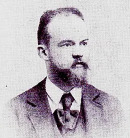
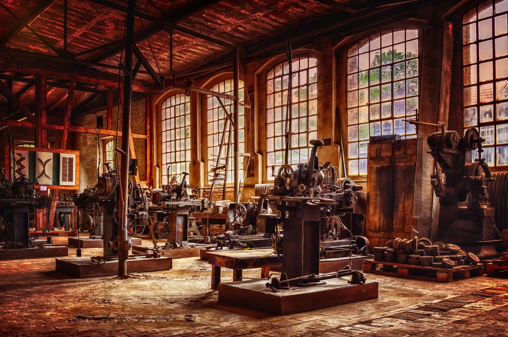

Le travail c’est la santé
Rien faire c’est la conserver
Les prisonniers du boulot
N’font pas de vieux os.
C’est au travers de ces paroles que l’illustre Henri Salvador commence sa musique hautement célèbre dans la culture française. Point de vue simple : si vous voulez mourir vieux, ne travaillez pas. Mais est-ce que cette utopie anti-macroniste peut être une réalité là où la vie de tous les jours nous donne un contre-exemple pur et simple ? Peut-il y avoir un monde où l’oisiveté serait reine, tandis que le travail serait devenu une activité dont seul les anciens connaîtrait l’Histoire ?
Avant d’entrer dans le vif du sujet, je tenais à vous remercier de votre initiative à lire ce court essai. Peut-être va-t-il vous intéresser, vous énerver, vous éveiller : mon but est simplement de vous offrir un angle de vue qui me semble intéressant à aborder. Il s’agit d’un résumé de ma réflexion sur plusieurs semaines à propos de la notion même de travail, en pleine période de débat sur la retraite française.
Bien évidemment, je n’effleure que la surface de la problématique : le sujet mériterait des années de travaux acharnés pour espérer offrir une réponse précise au problème. Je vous prie donc de prendre mes propos comme une base possible de réflexion, de les utiliser, les modifier, les transformer comme bon vous semble pour forger votre propre approche du problème.
Bonne lecture !
Le sens de « travail »
D’après le Larousse, le travail est :
une activité laborieuse de l’homme considérée comme un facteur essentiel de la production et de l’activité économique
On retrouve dans cette définition un point très important : le travail est essentiel à l’activité économique. Il est l’activité qui permet de vivre financièrement, et qui permet à la société de générer des biens et des richesses.
Il est important de souligner que cette définition du travail est indépendante du régime politique dans laquelle elle est appliquée : le travail restera toujours essentiel à la sphère économique de la société qu’il s’agisse d’une société capitaliste, communiste ou encore socialiste. Seul sa justification va changer : dans une société capitaliste, nous travaillons pour augmenter notre capital, tandis que dans une société communiste, nous travaillons pour augmenter le capital de tout le monde.
On travaille dans l’objectif d’avoir une vie meilleure, un plus grand confort, pour que nous puissions nous épanouir. Cette objectif est donc un intermédiaire vers une vie où travailler n’est plus qu’un lointain souvenir. Dés lors qu’un individu obtient tout ce qui est nécessaire pour vivre une vie épanouie, il n’a plus de raison de continuer de se contraindre à travailler, et peut laisser choir son activité laborieuse au profit d’une vie enrichissante.
Le travail proprement dit est donc un esclavage et, à ce titre, répugne de manière irréductible à la nature humaine. C’est seulement dans le jeu, ou le travail-jeu (…) que l’homme est libre, qu’il fait ce qui lui plaît, que son esprit se déploie de façon pleinement autonome, ce en quoi il est vraiment homme et accomplit le destin le plus élevé et le plus noble de l’humanité.
 Giuseppe Rensi, philosophe et avocat italien Les mots de Giuseppe Rensi au travers de son essai Contre le travail nous amènent au constat suivant : le travail est esclavage, le travailleur est esclave. On détruit la nature originel de l’humain, de cet humain qui réfléchit, qui construit, qui choisit, au profit de l’humain qui exécute.
L’humain est un être joueur : il aime faire des choses, non pas par intérêt, mais parce qu’il le souhaite. Il agit par conviction et par désir. Le travail ne suit en aucun cas cette définition : nous pouvons désirer l’objectif du travail, mais l’activité de base reste une contrainte, et donc à l’opposé de ce que nous recherchons naturellement.
Travail et oisiveté
Au travers des différents gouvernements français, un constat est réalisable assez facilement : l’oisif est une plaie qu’il faut haïr. Cet être est un nuisible qui empêche les autres de travailler. Qu’importe le nom qu’on lui donne (chômeur, feignant, assisté), on lui octroie une image que le Diable lui-même n’a jamais été capable d’obtenir.
On peut expliquer cette réalité par l’éducation française dont on nous vante tant les mérites. Dés notre plus jeune âge, nous avons été éduqué•e•s pour être des travailleurs•euses. L’éducation telle qu’elle existe en France mise essentiellement sur le fait qu’il faut former les enfants à travailler. Dés le primaire, le plaisir et l’épanouissement de l’enfant est mis de côté pour se focaliser sur l’acquisition pure et dure des savoirs. Les élèves sont contraints de travailler, ils sont évalués en permanence, et tout être oisif est puni et châtié.
 Another Brick in the Wall Part 2 - Pink Floyd
Une fois les enseignements primaires, secondaires et tertiaires passés, il est nécessaire de se frayer une place dans la société. Et la société ne nous reconnaît qu’à la condition que nous ayons un travail : elle nous doit une chose si nous lui donnons quelque chose. De fait, l’être oisif est quasiment invisible : étant donné qu’il ne donne pas de sa personne, il n’est pas un composant essentiel, et on lui permet simplement de vivre qu’à la condition qu’un jour, il devienne un travailleur.
Another Brick in the Wall Part 2 - Pink Floyd
Une fois les enseignements primaires, secondaires et tertiaires passés, il est nécessaire de se frayer une place dans la société. Et la société ne nous reconnaît qu’à la condition que nous ayons un travail : elle nous doit une chose si nous lui donnons quelque chose. De fait, l’être oisif est quasiment invisible : étant donné qu’il ne donne pas de sa personne, il n’est pas un composant essentiel, et on lui permet simplement de vivre qu’à la condition qu’un jour, il devienne un travailleur.
Il pourrait être intéressant d’étudier l’image de l’oisiveté et de ses pratiquants dans les différents médias (traditionnels et modernes). Pareillement, il pourrait être pertinent d’effectuer une autre étude sur la perception d’un oisif par un travailleur. Mais, de mon point de vue, ce n’est pas un très grand risque de dire que l’oisiveté est, pour la plupart, la mère de tous les maux du monde.
Un monde sans travail
Finalement, dans une période où l’on prône le retour à la nature, la low-tech, la slow-food, ne serait-il pas logique de revenir à cet état où l’humain ne redeviendrait qu’un être simple agissant par sa propre volonté ?
La solution à la gestion d’un monde sans travail peut être vu en regardant le fonctionnement de la société grecque dans l’Antiquité. Le travail manuel était un labeur honteux qui n’était effectué que par les esclaves. Mais cela permettait aux intellectuels de vaquer à leurs occupations. Cette organisation permet à une partie de la population de vivre idéalement, mais à la condition de sacrifier une partie de la population. Dans ce modèle, on crée un état de privilégiés et d’esclaves.
Qu’il y ait donc des êtres qui soient, par nature, les uns libres, les autres esclaves, c’est évident pour ceux pour qui l’esclavage est à la fois utile et juste. — Les Politiques, Aristote- I, 5, § 11, p. 103
La solution grecque n’est pas en accord avec mes convictions : on construit une société qui est logiquement injuste, en différenciant deux types d’individus. D’une certaine manière, on peut poser le constat que la vie oisive idéale nécessite implicitement que tous les individus ne la vivent pas : il est nécessaire que les travaux à la base de la société soient accomplis.
On peut donc définir sur le sujet deux visions : - la vision élitiste : on permet à certains individus de s’épanouir parfaitement au détriment d’une majorité de la société (pas de temps de travail pour une minorité). - la vision communautaire : chacun peut prétendre à plus d’épanouissement, à la condition que chacun prenne également part aux travaux (diminution du temps de travail général car augmentation du nombre de travailleurs).
Déshumaniser le travail
Une troisième vision devient de plus en plus cohérent au fur et à mesure des années : les travaux sont assumés par les machines. La robotique a fait des progrès incroyables ces dix dernières années, notamment avec l’apogée des réseaux neuronaux. On possède donc des machines plus intelligentes, plus productives et non concernées par les problèmes existentiels humains.
 L’intérêt actuel de la robotique concerne l’augmentation de la productivité et la baisse de ressources humaines qu’il est nécessaire pour faire un projet. Le but est donc, de base, purement capitaliste, voir même militaire si on prend la robotique développée par Boston Dynamics. Mais, indirectement, on peut considérer que la destruction des emplois engendrée par la robotique (voir l’étude d’Oxford Economics) est une aubaine : la quantité de travail disponible dans les sociétés baissent au fur et à mesure des années, et cette baisse va nécessiter une reconsidération des conditions de travail existantes.
À terme, on peut considérer que le temps de travail va nécessairement baisser, ce qui permettra au fur et à mesure : - dans le cas d’une vision élitiste d’augmenter le nombre de personnes pouvant prétendre à une vie oisive. - dans le cas d’une vision communautaire d’augmenter le nombre d’heures d’oisiveté de l’ensemble de la société.
En allant toujours plus loin, si les progrès techniques et technologiques continuent sans interruption, on peut prétendre à terme obtenir un monde où les machines s’occupent de tous les travaux essentiels à la vie de l’humain, et que celui-ci puisse prétendre à jouir de sa vie par sa propre volonté, et uniquement par celle-ci.
Conséquences de la fin du travail
La disparition du travail dans notre utopie aurait forcément des conséquences sur le fonctionnement global de la société. Tout d’abord, la société fonctionne normalement sur l’argent, et cet argent est distribué principalement par l’intermédiaire du travail. Il est donc nécessaire de trouver un modèle de société qui puisse répondre à une société sans travail (ou, au minimum, avec moins de travail).
On pourrait alors penser à un modèle basé sur un revenu universel, permettant à chacun de subvenir à ses besoins, et permettant ensuite à ceux qui le veulent de s’investir pour obtenir plus d’argent. Ce revenu garantirait une base de vie correcte, tandis qu’il serait possible aux gens de s’investir plus dans la société, qu’il s’agisse de travail rémunéré ou de bénévolat. Qu’importe que certains s’enrichissent plus que d’autres, que leur cupidité nécessite de s’extraire des plaisirs de la vie, tant qu’ils ne deviennent pas nocifs au bien commun. On peut entendre par là qu’ils n’exercent pas de contrôle sur les produits nécessaires à la vie, ou encore qu’ils n’obligent pas la société à se moduler pour leurs besoins. La richesse ne devrait être qu’un moyen d’obtenir plus de choses sans jamais que d’autres en obtiennent moins.
Les humains pourraient alors jouir de leurs activités et sortir d’un état de stress et de décrépitude que nous ne connaissons que trop bien de nos jours. Mais il est important que la diminution du temps de travail implique plus de temps libre, et ce temps libre nécessite d’être dépensé. Il est nécessaire que chacun puisse avoir de quoi se distraire, se cultiver, s’épanouir, se former, ou encore s’évader. D’une certaine manière, l’industrie des loisirs (sportif, culturel, etc.) prendrait alors une part encore plus importante qu’elle ne l’est déjà aujourd’hui. André Gorz avait déjà formulée cette pensée, sans forcément penser à l’exécution de sa formule (voir Métamorphoses du travail). Car si la conséquence est prévisible, il est nécessaire de savoir comment il est possible de répondre à cette demande en gardant toujours le même postulat en tête : les gens ne travaillent plus.
Nous nous retrouvons donc dans une société qui est censés produire une certaine quantité de biens et de faits culturels, mais il est nécessaire de produire ces choses. Notre postulat initial étant que la robotique remplacerait la main d’œuvre pour produire les biens de la société, est-ce réellement applicable au domaine de la culture ? Est-ce qu’un robot peut produire un film, composer une musique ou faire un concert ?
Par extension, on peut considérer qu’il est nécessaire de contrôler et de maintenir les machines qui produisent. On peut considérer qu’un monde dans lequel les robots s’occupent d’eux-mêmes entre eux pourra exister, mais il s’agit probablement de notre vision utopiste poussée à l’extrême. En conséquence, l’humain a besoin de contrôler et de maintenir les productions des machines pour qu’elles continuent de produire suffisamment de choses pour que chacun•e puisse vivre à son aise. On retrouve donc, dans notre monde idéaliste, une certaine quantité de personnes qui doivent travailler pour le bien commun de tous. Est-ce que le travail est nécessaire, de fait, dans un monde qui souhaite faire disparaître le travail ?
Enfin, pour que nous jouissions d’un confort de vie toujours plus élevé et continuer de maintenir l’humanité dans l’évolution, il est nécessaire de conserver un certain nombre d’esprits dévoués à la recherche et l’innovation pour le bien commun. De fait, on retrouve donc, sous le prétexte du bien commun, une nouvelle frange de la population qui travaille, et ce encore une fois a contrario de notre postulat de départ. Est-ce donc réellement possible de concevoir une organisation du monde où le travail n’existe donc plus ?
Travail et jeu
Pour répondre à ces problématiques, Rensi a formulé que le contraire de la notion de travail est la notion de jeu. Il considère que le jeu correspond à l’essence de l’humain : nous jouons car nous décidons de jouer, de faire l’activité qui nous semble intéressante. Le jeu devient travail à partir du moment où l’on joue par contrainte. Le joueur•euse de football amateur joue par plaisir, tandis que le joueur•euse de football professionnel le fait pour vivre.
Est-ce qu’il est possible de prendre du plaisir dans le travail ? La réponse est oui, et c’est la séparation que Rensi crée dans sa vision du monde. On trouve donc le travail-jeu qui implique la contrainte mais qui nous fournit une activité qui nous procure malgré tout du plaisir, tandis que le travail-travail est purement douleur. Le premier offre une activité qui nous stimule suffisamment selon nos critères pour que nous soyons bien dans cette activité, tandis que le deuxième n’offre rien d’épanouissant.
De cette vision à 3 catégories, on peut concevoir une autre conception d’un monde sans travail. On peut réfléchir à un monde dans lequel le travail-travail est voué à être exécuté par la robotique, tandis que le travail-jeu et le jeu reste la propriété humaine. On énonce alors que l’humain nécessitera forcément de produire des choses pour se développer lui-même.
Pour illustrer cette vision, on peut prendre l’exemple du compositeur qui écrit sa musique pour illustrer son art, transmettre une pensée, une émotion. Le compositeur développe sa façon de concevoir à travers l’évolution de ses compositions. Pareillement, le réalisateur de films cherche à raconter une histoire, à montrer le monde sous un angle différent, ou encore à atteindre le spectateur à travers son œuvre. Nous sommes dans le jeu. Cependant, dans ce cas-ci, l’humain a besoin de l’aide d’autres humains pour réussir à mener à bien le projet de film. Ces personnes vont donc travailler sous la contrainte du réalisateur, mais dans un même but : construire une œuvre dans laquelle ils prennent du plaisir. Ils sont stimulés par la création de ce projet.
Ces humains font donc partis de ce que l’on a nommé précédemment le travail-jeu : ils sont contraints d’effectuer une tâche, mais cette tâche leur permet de s’épanouir. Il apporte des idées, expriment leurs opinions et permettent d’aboutir à une vision collective à travers une unique entité. Il est nécessaire qu’il y ait un intérêt réel dans le projet, faute de quoi nous retombons dans le cas du travail-travail où l’esprit laisse sa place à l’exécution pure et dure des tâches.
Repenser le travail
Nous avons donc défini une vision du monde tel que le travail n’est plus le moteur mais un composant. Chacun contribue à la société parce qu’il en a décidé. Les travailleurs côtoient les oisifs sans qu’il y ait une quelconque jalousie, car chacun fait ce qu’il lui plaît. Et c’est cette notion qui différencie le monde actuel de notre utopie : les individus ont le choix.
Si cela peut paraître simplet, abstrait ou naïf, il me semble que c’est pourtant un des problèmes qui détruit à petit feu une société comme la France : les gens n’ont plus le droit de choisir ce qu’ils doivent faire de leur vie. Ils doivent suivre une voie toute tracée, effectuer des actions dans des créneaux horaires bien définis, et vivre cette vie jusqu’à, pour les chanceux, que la retraite arrive, et pour les autres, jusqu’à ce que la mort les sauvent.
Ce schéma de vie français, signé de la patte dure du libéralisme, construit sur l’édifice de l’élitisme républicain, octroie une vie humaine à ceux qui ont eu le privilège de naître à l’abri de leur nom. Il est une prison où la richesse devient une libération. Sans ça, le travailleur est voué à traîner son boulet pendant que l’institution dirigeante continue sans cesse de le fouetter pour qu’il aille toujours plus vite.
Et là où le bât blesse, c’est que l’évolution de la société vise actuellement à créer des travailleurs sur une plus longue durée que ce que nous avions auparavant ! Si cela peut se justifier au premier abord sur l’argument de la durée de vie, il n’empêche que, d’une part, il est justifiable que le travail est plutôt antonyme de la notion de confort du corps. Il s’agit du principe même de pénibilité qui permet de savoir si un travail va nous amener plus ou moins vite à l’hôpital. De plus, sur le plan philosophique, nous passons nos plus belles années, celles où nous construisons le plus notre moi, notre intellect, notre physique, nos relations, nos projets, bref, notre vie, à subir le travail en espérant une retraite heureuse. N’est-il pas logique de penser à profiter de notre vie avant de se retrouver dans cette longue agonie qu’on nous promet depuis notre naissance ?
Il est important de reconsidérer la part du travail dans la société, et la construction de celui-ci. Les années passent, la 203e décennie après Jésus-Christ a débutée, et pourtant le vent semble tourner de plus en plus en faveur de la richesse individuelle, le confort de sa personne et la mort de la communauté. L’évolution de la société passe par celle de ses fondements, et il est primordial que le débat sur le travail s’ouvre pour construire un idéal dans lequel chacun peut construire, s’épanouir, et tout simplement vivre.
Maint’nant dans le plus p’tit village
Les gens travaillent comme des sauvages
Pour se payer tout le confort
Quand ils l’ont, eh bien, ils sont morts.
Henri Salvador, quel bel homme !